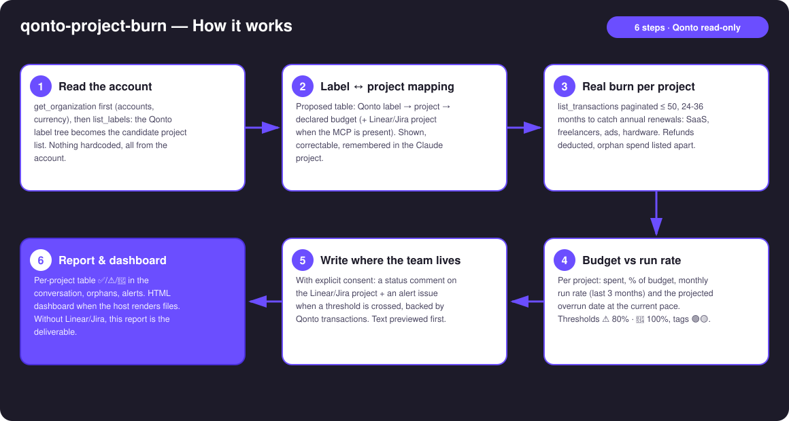
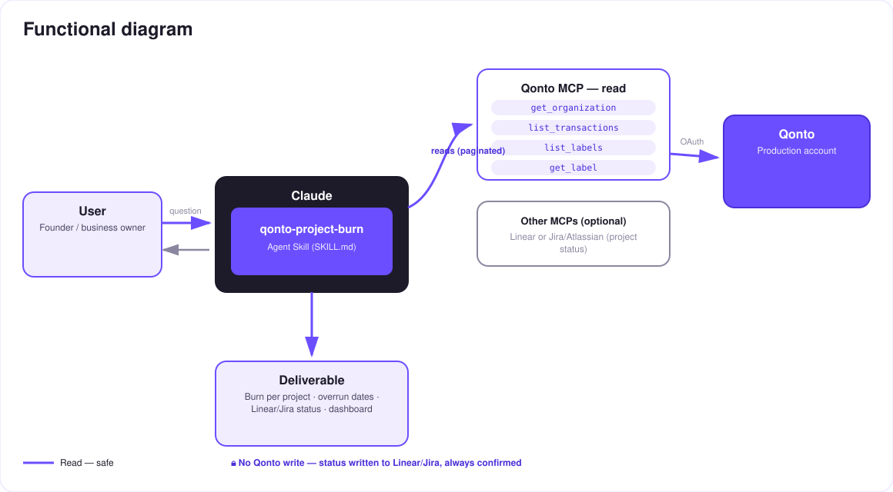

What project X actually cost — real burn per project, written where the team lives.
Teams plan in Linear or Jira; the money lives in Qonto. So nobody knows what project X actually cost — dedicated SaaS, freelancers, ads, hardware. The skill closes that gap:
A simple config table proposed from existing Qonto labels, correctable line by line, remembered in the conversation or the Claude project.
Up to 36 months scanned (annual renewals included), refunds deducted, orphans listed apart — never silently attributed.
Current monthly run rate → "at this pace, Alpha crosses on Aug 12", confidence tags 🟢🟡, thresholds ⚠️ 80 % · 🔴 100 %.
With consent: an "X € / Y € — Z %" comment on the Linear/Jira project + an alert issue when a threshold is crossed, backed by Qonto transactions.
Would someone use this on a Monday morning? It's the sprint-planning question — "where is Alpha, really?" — with the money in the answer.
| Prerequisite | Detail | Required |
|---|---|---|
| Qonto production account | Adapts to any organization — get_organization first, nothing hardcoded | ✅ |
| Country | Universal — labels + transactions, no tax rules: every Qonto country (FR, DE, ES, IT, AT, NL, BE, PT) | ℹ️ all |
| Qonto MCP connected | Official connector (claude.ai / Claude Desktop), OAuth login | ✅ |
| Qonto labels | A few transactions labelled per project. No labels: mapping proposed from recurring suppliers (🟡 tags) | ⭕ recommended |
| Linear or Jira/Atlassian MCP | Detected dynamically — otherwise degraded mode: full report + HTML dashboard in the conversation | ⭕ optional |
| Declared budgets | Provided by the user in the mapping (or read from the Linear project description when formatted) — never invented | ✅ at setup |

modify_transaction_cash_flow_category (light, reversible, confirmed write)emitted_at vs settled_at) · multi-account orgs handled · pagination ≤ 50 everywhere
On the Qonto side, everything is a read — no transfer, no payment, nothing touches the money. The dashed (write) arrow points at Linear/Jira, not at the bank: a comment or an issue, always previewed in full and posted only after explicit consent in the conversation.
| Project | Spent | Budget | % | Run rate | Projected overrun | Status |
|---|---|---|---|---|---|---|
| Alpha | €10,440 | €12,000 | 87 % | €1,950/mo | Aug 12 | ⚠️ |
| Kepler | €3,100 | €8,000 | 39 % | €620/mo | — | ✅ |
| Odyssey | €21,500 | €20,000 | 108 % | €1,400/mo | crossed | 🔴 |
Entirely fictional example — projects, amounts and dates invented for illustration.
| Qonto label | Project | Linear/Jira project | Declared budget |
|---|---|---|---|
alpha | Alpha | Alpha (Linear) | €12,000 |
kepler-app | Kepler | Kepler (Linear) | €8,000 |
ody | Odyssey | — (no tracker project) | €20,000 |
| Output | Format | When |
|---|---|---|
| Conversation reply | Markdown tables (burn per project, orphans, alerts) | Always — the baseline |
| Linear/Jira comment | "X € / Y € — Z % · projected overrun on [date] · top 5 lines" on the mapped project | Tracker MCP detected + explicit consent |
| Linear/Jira alert issue | "⚠️ Budget [project] Z %" + the Qonto transactions that justify it | Threshold crossed + explicit consent |
| Interactive dashboard | HTML file/artifact: spent-vs-budget bars, run rate, overrun markers | When the host renders files; automatic fallback to tables |
The ≤ 3-minute demo attached to the PR walks through: the problem → the mapping → burn & overrun dates → opening Linear and finding the "⚠️ Budget Alpha 87 %" issue Claude created, backed by the Qonto transactions → the final dashboard. The finance comes to the team — not the other way around. The detailed shooting script is kept internal (outside the repo).
| Idea | Effort | Note |
|---|---|---|
| Budget per sprint/cycle, not just per project | Medium | Reuses the mapping, sliced by Linear cycle dates |
Real per-project margin: cross with list_client_invoices | Medium | Burn − invoiced = project margin |
| Weekly ritual: status posted every Monday | Low | Same write, same consent |
| Slack/Notion as alternative status targets | Low | Optional multi-MCP, detected dynamically |
list_cash_flow_categories → 403 on the claude.ai connector: expected, labels are the fallbackFor the company-wide view (runway, all-costs cockpit): the qonto-ceo-cockpit skill. This one is the project-level granularity.